CSS permite selectarea elementelor pe baza structurii pe care o creează între ele. Este vorba de un grup de pseudo-clase structurale foarte utile, prezentate în tabelul de mai jos
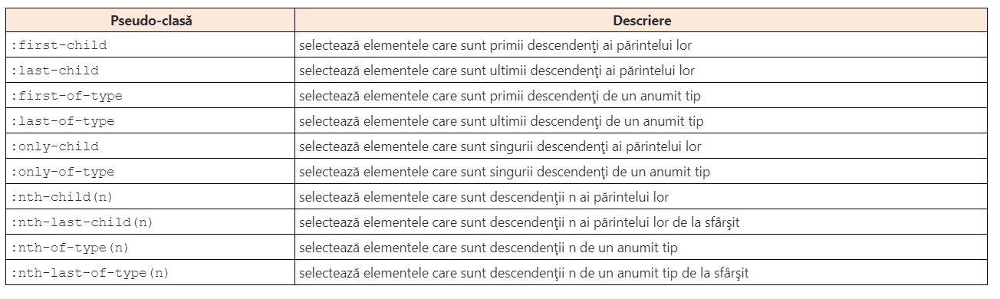:first-child
Pentru selectarea elementelor care sunt primii descendenţi ai părintelui lor, putem folosi pseudo-clasa :first-child. Imaginea de mai jos ilustrează utilizarea acestui selector.
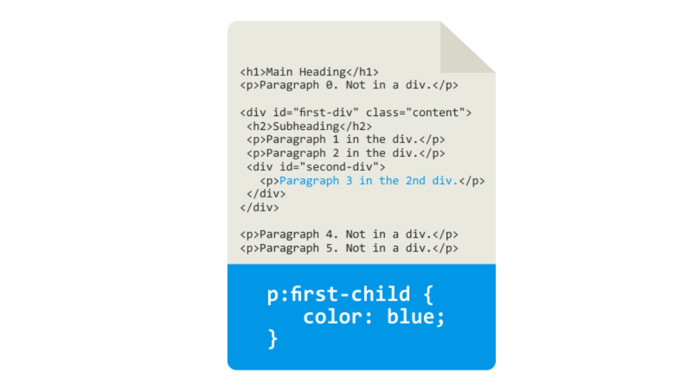:last-child
În imaginea de mai jos se poate vedea că în acest fel sunt selectate doar paragrafele care reprezintă ultimii descendenţi ai părintelui lor. Paragraph 3 este, totodată, primul şi ultimul descendent al părintelui său, având în vedere că acesta este singurul element din cadrul elementului div de tip second-div. Paragraph 5 este ultimul descendent al elementului body.
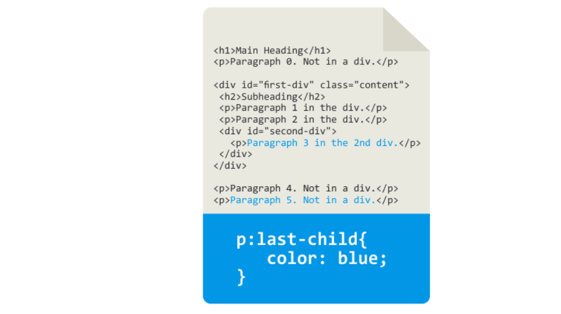:first-of-type
În imaginea de mai jos se poate vedea că se selectează toate elementele paragraph care sunt primii descendenţi de un anumit tip, în cadrul părintelui lor. În cadrul elementului body, primul descendent de tip p este Paragraph 0. În cadrul elementului first-div, primul descendent de tip p este Paragraph 1. În cele din urmă, Paragraph 3 este primul, ultimul şi singurul descendent al elementului second-div.
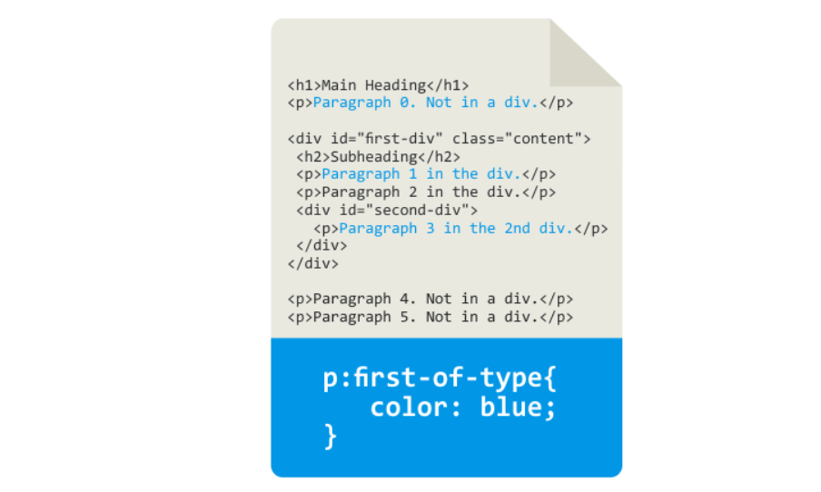:last-of-type
De această dată, se selectează toate elementele p, care sunt ultimii descendenţi de acest tip. În cadrul elementului body, ultimul element de tip paragaraph este Paragraph 5. În cadrul elementului second-div, primul şi ultimul paragraf este Paragraph 3, în timp ce în cadrul elementului first-div, ultimul element de tip paragraph este Paragraph 2. În exemplul elementului Paragraph 2, se poate vedea diferenţa dintre selectorii :last-child şi :last-of-type.
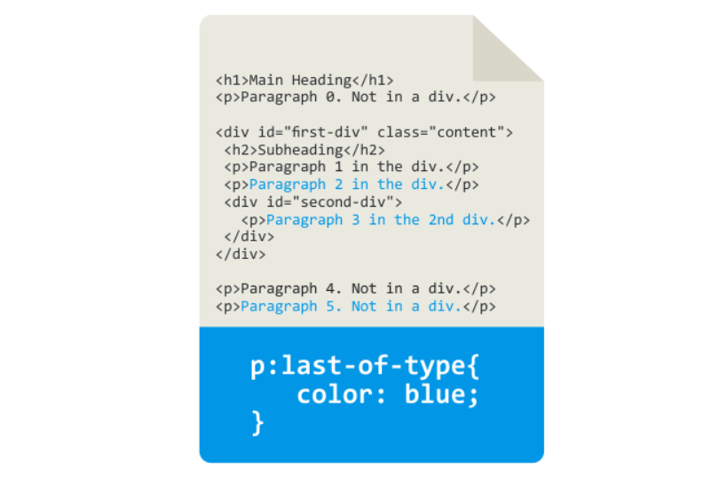:only-child
Selectorul :only-child selectează elementul dacă el este singurul descendent al părintelui său. Următorul exemplu, prezentat în imaginea de mai jos, ilustrează această situaţie.
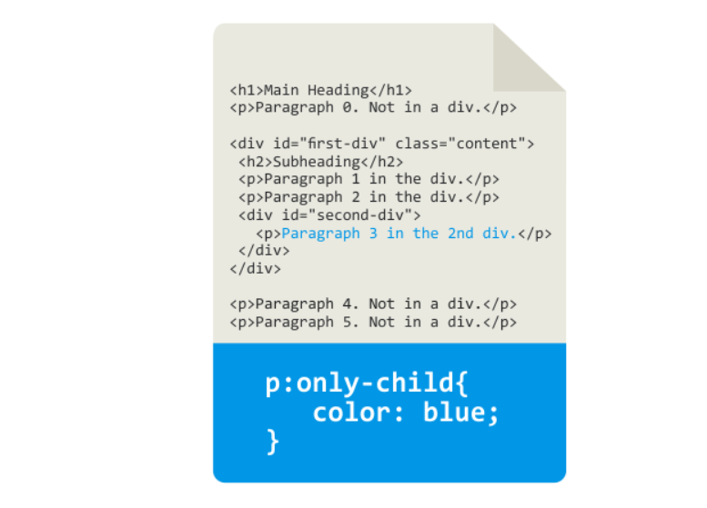:only-of-type
La fel ca la selectorul anterior, pseudo-clasa :only-of-type asigură selectarea elementului doar dacă acesta este singurul descendent al tipului său. Exemplul este ilustrat în imaginea de mai jos
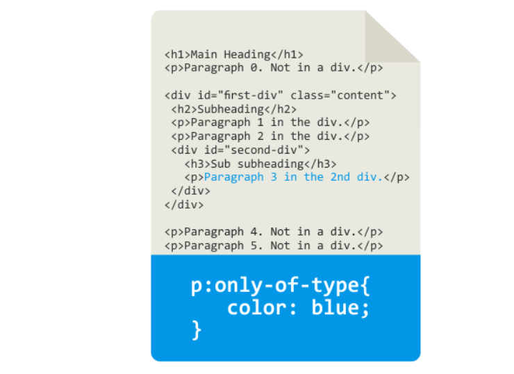Toate elementele de tip container conţin mai multe paragrafe. Doar elementul second-div are exact un element de tip paragraph. Prin urmare, spre deosebire de exemplul anterior, Paragraph 3 nu este singurul descendent al părintelui său, dar este singurul descendent de tipul său, aşadar, va fi selectat cu pseudo-clasa :only-of-type. Dacă, într-un anumit caz, în acest exemplu am fi folosit selectorul :only-child, nu ar fi fost selectat niciun element.
:nth-child(n)
Pseudo-clasa :nth-child(n) permite selectarea elementelor care sunt descendenţii n ai părinţilor lor. Exemplul din imaginea de mai jos ilustrează utilizarea acestui selector.
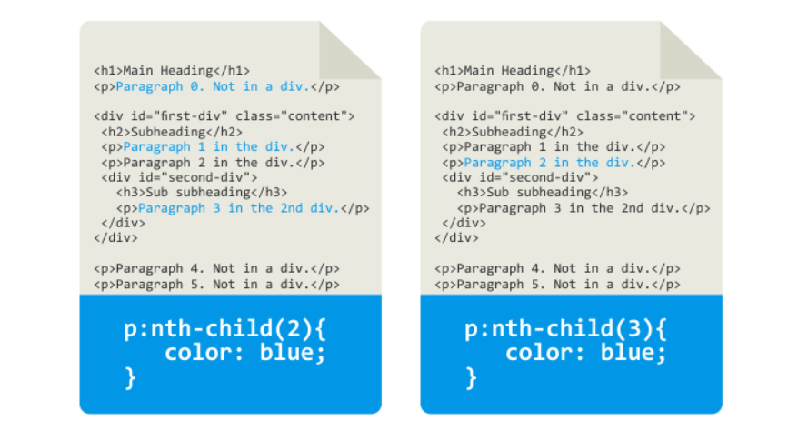Logica arbitrară de selectare la pseudo-clasele care deţin variabilă
Variabila n în cadrul selectorului :nth-child(n) (dar şi în cadrul altor selectori care deţin o variabilă în sintaxa lor şi a căror descriere urmează) nu este limitată la o valoare întreagă. Prin urmare, valoarea variabilei n poate fi un număr întreg, un cuvânt-cheie sau o formulă. Pseudo-clasele CSS, în loc de variabilă, pot accepta două cuvinte-cheie: odd şi even. În acest fel, se permite selectarea tuturor elementelor care au un index impar, respectiv par.
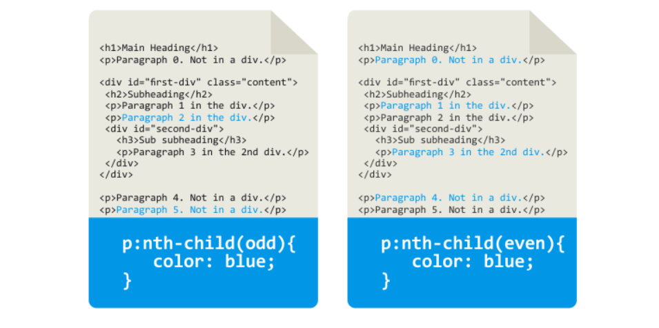Pe lângă numerele întregi şi cuvintele-cheie even şi odd, pseudo-clasele pot accepta în locul variabilei şi o formulă. Formula are următoarea formă:
(an + b)
În formula prezentată, a este multiplicatorul, n este contorul, iar b este offset-ul. Contorul începe de la 0. Imaginea 3.9. ilustrează definirea expresiei prin folosirea formulei specificate în locul variabilei.
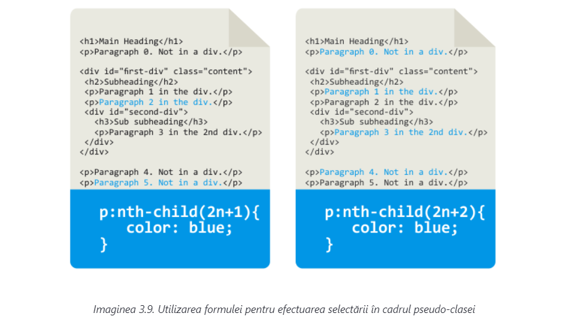În exemplul prezentat în partea stângă a imaginii 3.9, este definită următoarea expresie:
(2n+1)
În acest fel, vor fi selectate toate elementele p care au următoarele numere de ordine în ierarhia elementelor sale părinte:
(2*0+1)=1 (2*1+1)=3 (2*2+1)=5 (2*3+1)=7 ...
Valoarea iniţială a contorului este zero, iar în fiecare iteraţie contorul se măreşte cu unu. Astfel, se obţin rezultatele prezentate mai sus. Se poate observa că prin folosirea formulei (2n+1) se obţine un efect identic efectului produs de cuvântul-cheie odd, deoarece se selectează toate elementele impare. În partea stângă a imaginii 3.9. este definită pseudo-clasa :nth-child cu formula (2n+2). În acest fel, vor fi selectate toate elementele p cu următoarele numere de ordine:
(2*0+2)=2 (2*1+2)=4 (2*2+2)=6 (2*3+2)=8 ...
Se poate observa că formula (2n+2) are un efect identic cu cel al cuvântului-cheie even, pentru că selectează elementele.
:nth-last-child(n)
Selectorul :nth-last-child(n) are un efect identic celui anterior descris, doar că elementul efectuează numărătoarea inversă. Exemplele de utilizare a acestui selector sunt prezentate în imaginea 3.10.
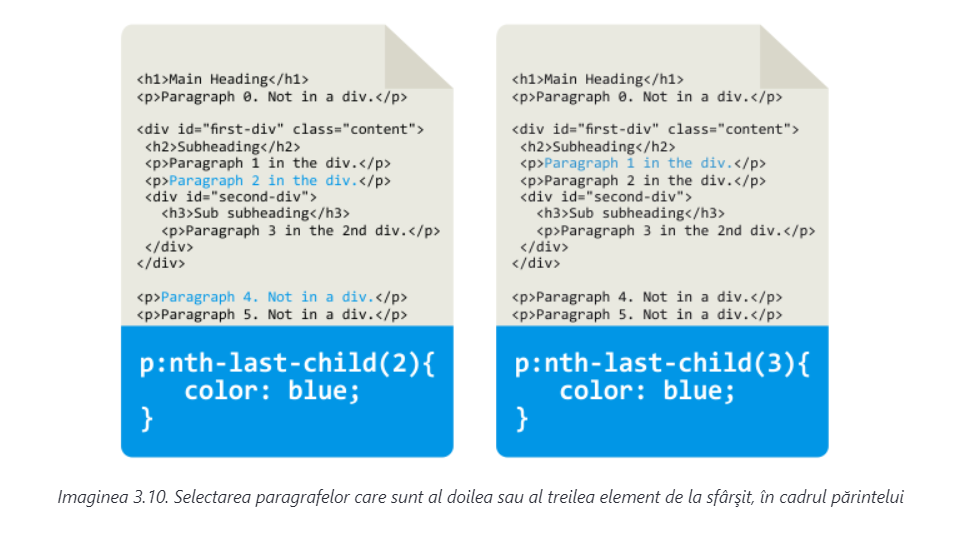În exemplul de mai sus, adică în partea stângă a imaginii 3.10, se selectează fiecare paragraf care este al doilea descendent de la sfârşit, în cadrul containerului său părinte. Paragraph 4 este, cu siguranţă, al doilea descendent de la sfârşit, având în vedere că înainte de el, observat de la sfârşit, există doar elementul Paragraph 5. De asemenea, condiţia menţionată satisface şi elementul Paragraph 2, pentru că în cadrul elementului first-div, înainte de el, de la sfârşit, există doar elementul second-div.
:nth-of-type(n)
Selectorul :nth-of-type(n) este, practic, identic cu selectorul :nth-child(n), doar că selectează toate elementele n, dar exclusiv de un anumit tip. Imaginea 3.11. ilustrează utilizarea acestui selector.
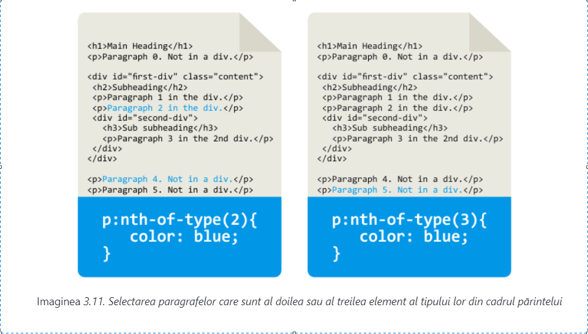Selectorul din partea stângă a imaginii 3.11. selectează toate elementele de tip paragraph care sunt al doilea descendent al tipului lor, al părintelui lor. Paragraph 2 îndeplineşte aceste cerinţe, având în vedere faptul că Paragraph 1 este primul descendent. În partea dreaptă a imaginii 3.11. are loc selectarea tuturor paragrafelor care sunt al treilea descendent din cadrul părintelui lor. Singurul element care îndeplineşte acest criteriu este elementul Paragraph 5. Înainte de el, în cadrul aceluiaşi părinte, se găsesc elementele Paragraph 0 şi Paragraph 4, aşadar, este clar că Paragraph 5 este al treilea element p în cadrul părintelui său.
:nth-last-of-type(n)
Selectorul :nth-last-of-type(n) selectează toate elementele care sunt descendenţii n ai tipului lor, dar observat de la sfârşit. Imaginea 3.12. ilustrează utilizarea acestui selector.
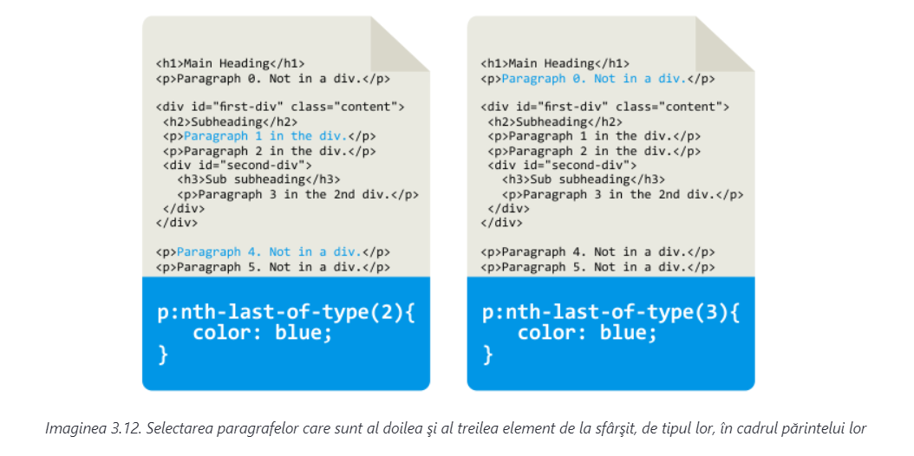În partea stângă a imaginii 3.12. este ilustrată selectarea fiecărui element de tip paragraph care este al doilea de la sfârşitul elementului paragraph în cadrul părintelui său. Paragraph 4 este al doilea paragraf de la sfârşit, deoarece înaintea lui se află Paragraph 5. De asemenea, Paragraph 1 este al doilea de la sfârşit, în cadrul părintelui său, deoarece înainte de el există doar Paragraph 2. În partea dreaptă a imaginii 3.12, în exemplu, valoarea parametrului este mărită la 3. În acest fel, se selectează fiecare element de tip paragraph, care este al treilea descendent de tipul său, de la sfârşit. Doar elementul Paragraph 0 îndeplineşte acest criteriu. Înaintea lui, în cadrul aceluiaşi container, există elementele p Paragraph 5 şi Paragraph 4.
Selectorul :nth-last-of-type(n), la fel ca selectorii prezentaţi anterior, poate accepta parametrul în forma unei valori întregi, a unui cuvânt-cheie sau în forma unei formule.
#gallery a img:hover:nth-child(1n+4) { }